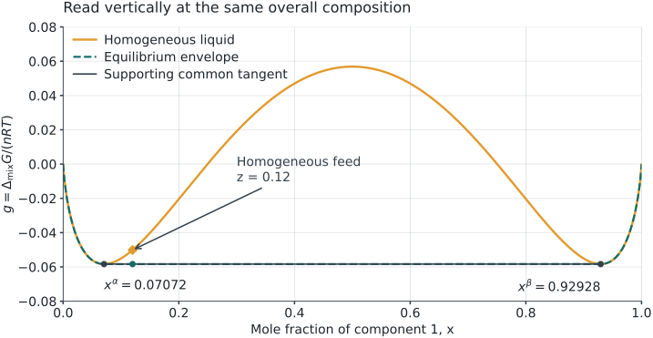

Week 6 · Onsite · 180 minutes
13 November 2026
Follow the same reaction throughout the derivation.
\mathrm{A_2(g)\rightleftharpoons 2A(g)}
The chemical potential of each species depends on its activity.
\mu_i=\mu_i^\circ+RT\ln a_i
\mu_i^\circ refers to the chosen standard state. The activity a_i is dimensionless. For a gas, use a_i=f_i/p^\circ.
At fixed temperature and pressure, a small forward reaction consumes one unit of A₂ and forms two units of A.
\mathrm dn_{\mathrm A}=2\,\mathrm d\xi,\qquad \mathrm dn_{\mathrm{A_2}}=-\mathrm d\xi
Substitute these amounts into \mathrm dG=\sum_i\mu_i\,\mathrm dn_i.
\mathrm dG=(2\mu_{\mathrm A}-\mu_{\mathrm{A_2}})\,\mathrm d\xi
The reaction Gibbs energy is the slope along the reaction extent \xi.
\Delta_rG=\left(\frac{\partial G}{\partial\xi}\right)_{T,P}=2\mu_{\mathrm A}-\mu_{\mathrm{A_2}}
Insert \mu_i=\mu_i^\circ+RT\ln a_i into the reaction Gibbs energy.
\Delta_rG=(2\mu_{\mathrm A}^\circ-\mu_{\mathrm{A_2}}^\circ)+RT(2\ln a_{\mathrm A}-\ln a_{\mathrm{A_2}})
Define \Delta_rG^\circ=2\mu_{\mathrm A}^\circ-\mu_{\mathrm{A_2}}^\circ and combine the logarithms.
\Delta_rG=\Delta_rG^\circ+RT\ln\left(\frac{a_{\mathrm A}^2}{a_{\mathrm{A_2}}}\right)
The ratio calculated from the mixture’s current activities is the reaction quotient.
Q=\frac{a_{\mathrm A}^2}{a_{\mathrm{A_2}}},\qquad \Delta_rG=\Delta_rG^\circ+RT\ln Q
At reaction equilibrium, \Delta_rG=0. Call the equilibrium value of the activity ratio K.
0=\Delta_rG^\circ+RT\ln K,\qquad K=\exp\left(-\frac{\Delta_rG^\circ}{RT}\right)
For the written reaction and chosen standard states, the temperature determines K. Combine this relation with the expression for the current mixture.
\boxed{\Delta_rG=RT\ln\left(\frac{Q}{K}\right)}
Compare Q with K to predict the reaction direction. Which sign does \Delta_rG have when Q<K?
For \mathrm{A_2(g)\rightleftharpoons 2A(g)}, use the dimensionless activity ratio a_{\mathrm A}^2/a_{\mathrm{A_2}}.
Reaction quotient, Q. Calculate the ratio using the activities in the mixture now.
Equilibrium constant, K. At equilibrium the ratio equals K. Its value is fixed at a given temperature for the written reaction and chosen standard states.
| If Q<K | If Q=K | If Q>K |
|---|---|---|
| The forward reaction forms A. | The reaction is at equilibrium. | The reverse reaction forms A₂. |
A question from Week 5. How does the pressure argument change for a real gas?
Start with the ideal-gas reaction \mathrm{A_2(g)\rightleftharpoons 2A(g)}. At 350 K, K=3.953 for p^\circ=100 kPa. Compress the mixture from 100 to 200 kPa at fixed temperature. Consider the instant before the composition responds.
| Starting value | Predict Q immediately after compression | Which way will the reaction move? |
|---|---|---|
| Q=K=3.953 | Calculate on paper | Toward A or A₂? |
| Q=1.000 | Calculate on paper | Toward A or A₂? |
Take one minute. Compare your two answers with a neighbor.
At fixed mole fractions, the ideal-gas quotient for this reaction is proportional to pressure.
Q=\frac{y_{\mathrm A}^2}{y_{\mathrm{A_2}}}\frac{P}{p^\circ}
| Before compression | Immediately after | Response at 350 K |
|---|---|---|
| Q=3.953 | Q=7.906>K | More A₂ forms. |
| Q=1.000 | Q=2.000<K | More A forms. |
As the reaction proceeds, the mole fractions change. At the new equilibrium, Q=K=3.953 in both cases.
At a specified T,P,\mathbf y, a mixture equation of state gives each component’s fugacity coefficient \phi_i. With an ideal-gas standard state,
a_i=\frac{f_i}{p^\circ}=\frac{\phi_i y_iP}{p^\circ},\qquad Q=\frac{a_{\mathrm A}^2}{a_{\mathrm{A_2}}}.
For this dissociation, the multiplier on the ideal-gas estimate is \phi_{\mathrm A}^2/\phi_{\mathrm{A_2}}. The coefficients can change during compression and as the reaction proceeds. The same T, written reaction and standard states give the same K.
Try it. At 350 K and 200 kPa, use y_{\mathrm A}=0.80, y_{\mathrm{A_2}}=0.20. For this illustrative state take \phi_{\mathrm A}=0.90 and \phi_{\mathrm{A_2}}=0.95. Calculate both activities and predict the direction.
The pressure ratio is 200/100=2. At the specified composition,
| Quantity | Calculation | Value |
|---|---|---|
| a_{\mathrm A} | 0.90(0.80)(2) | 1.44 |
| a_{\mathrm{A_2}} | 0.95(0.20)(2) | 0.38 |
| Q | 1.44^2/0.38 | 5.46 |
The ideal-gas estimate at this same state is 6.40. Both exceed K=3.953, so A₂ forms. To find the final extent for the real gas, update the composition and both fugacity coefficients until Q=K. Lab 12 solves the ideal-gas case.
| Class time | Activity |
|---|---|
| 0–15 min | Derive Q and K, then check compression and a real-gas calculation |
| 15–35 min | Revisit Weeks 2–5 in pairs with paper and a calculator |
| 35–60 min | Balance a cell reaction and calculate its potential by hand |
| 60–70 min | Demonstrate the concentration cell in Lab 13 |
| 70–80 min | Break |
| 80–150 min | Pair investigation and independent check |
| 150–180 min | Discuss results (20), exit ticket (5), feedback (3), closing (2) |
A VLE measurement gives P=100 kPa, x_1=0.40, y_1=0.60. Assume an ideal vapor, negligible Poynting correction and a pure-liquid reference state.
y_1P=x_1\gamma_1 P_1^{\rm sat},\qquad a_1=x_1\gamma_1.

At z_1=0.12, compare the curve and the supporting line at the same overall composition. Which state has lower Gibbs energy?
The homogeneous curve has positive local curvature here. What does the tangent tell you that curvature alone cannot?
A Gibbs–Duhem area test examines the VLE data. How could errors of opposite sign affect its signed integral?
At 300 K, a 1.00 L vessel contains 0.00200 mol of volatile A. Its equilibrium sublimation pressure is 10.0 kPa. Use R=8.314 kPa L mol^{-1} K^{-1} and assume an ideal gas.
Lab 12 used 1 mol of A₂ initially, zero A, no inert, and p^\circ=100 kPa. Use the same ideal-gas reaction in all three cases.
| Case | T (K) | P (kPa) | K | Equilibrium extent (mol) |
|---|---|---|---|---|
| 12A | 350 | 100 | 3.953 | 0.7050 |
| 12B | 350 | 400 | 3.953 | 0.4451 |
| 12C | 400 | 100 | 33.861 | 0.9457 |
Which pair isolates pressure? Which isolates temperature? For 12C assume a constant positive reaction enthalpy of 50 kJ mol^{-1}. Explain the change in K.
With a partner, use the extent in 12B to check 2n_{\mathrm{A_2}}+n_{\mathrm A} against the feed.
| Week | Compare with your calculation or prediction |
|---|---|
| 2 · VLE | With P_1^{\rm sat}=120 kPa, \gamma_1=1.25 and a_1=0.50. With P_1^{\rm sat}=150 kPa they become 1.00 and 0.40. Check Antoine units, log base and temperature range. |
| 3 · Stability | At z_1=0.12 the two-liquid line lies lower. Positive local curvature describes small fluctuations. Opposite errors can cancel in the signed area test. |
| 4 · Inventory | Saturation requires 0.00401 mol. All 0.00200 mol enters the gas, giving P_A=4.99 kPa. Adding ideal inert at fixed T,V raises total pressure while P_A stays at 4.99 kPa. For adsorption add m_s q mol. |
| 5 · Reaction | 12A–12B isolate pressure. 12A–12C isolate temperature. Heating raises K for this endothermic reaction. In 12B, 2(0.5549)+0.8902=2.0000 mol of A atoms. |
What determines the sign of a concentration-cell potential?
Week 5 gave us \Delta_rG=RT\ln(Q/K). A reversible cell turns that reaction driving force into a potential difference, E=-\Delta_rG/(nF).
Predict on paper. For the reaction as written, what sign should E have when Q<K? What voltage would you measure at complete cell equilibrium, Q=K?
Enter both half-reactions as reductions. Reverse the left reaction and add the right after matching electron counts.
E_{cell}^\circ=E_{right}^\circ-E_{left}^\circ
Both potentials need the same reference electrode and temperature. Multiplying a half-reaction does not multiply its potential.
Combine ΔrG=ΔrG°+RTlnQ with ΔrG=−nFE: E=E^\circ-\frac{RT}{nF}\ln Q
At 298.15 K, E=E^\circ-\frac{0.05915935\ \mathrm V}{n}\log_{10}Q
Changing T requires valid E° data at the new T.
Use the same \mathrm{M^{2+}/M} couple on both sides at 298.15 K. For oxidation on the left and reduction on the right, Q=a_{\mathrm L}/a_{\mathrm R}. Take a_{\mathrm L}=0.01, a_{\mathrm R}=1, n=2, and neglect the junction potential. Q=0.01,\qquad E=+0.05915935\ \mathrm V
E°=0, K=1, but E is nonzero. Reversing the concentrations changes the sign of E. Equal activities give E=0.
ΔrG≈−11.416 kJ per mol of the written reaction.
Use dimensionless activities. Concentration is an approximation with a stated standard concentration and activity coefficient.
Use Eright−Eleft and deltaG=−nFE with the balanced electron count. Equal activities must give zero potential for the same reduction couple.
Open the concentration-cell preset on the projector. On paper, make three rows for the original, exchanged and equal activities. If your device is offline, use the projected inputs and complete the same hand check. Predict the sign, exchange left and right activities, then set them equal. Keep T and reference conventions fixed.
Keep one saved baseline for the pair investigation.
In Lab 13, compare a concentration cell with the activities exchanged. Predict and explain the sign of E, then independently check deltaG=−nFE.
What determines the sign of a concentration-cell potential?
Compare results and discuss unexpected behavior. Use one numerical check to support your explanation.
In Lab 13, compare a concentration cell with the activities exchanged. Predict and explain the sign of E, then independently check deltaG=−nFE.
Assessment 6 and independent checkpoint
Retain one study JSON, one comparison and a short explanation.
Optional: Session appendix.
5 min · Explain and check
Answer the session question in the form. Give one result or independent check from today’s lab, with units.
3 min · Help improve the next class
Rate the pace, report lab access, and suggest one improvement.
Thai or English. No name, ID or email requested.
Wait for “Response received.” We will use the final 2 minutes to close the class.